Overview
Summary of the main sales indicators, with channel, status, period, and language filters and navigation to every page.
A bilingual sales dashboard built on Oracle OCI. It tracks revenue, orders, costs, profit, customers, and targets in Portuguese and English, with currency and formatting adapted to each language.
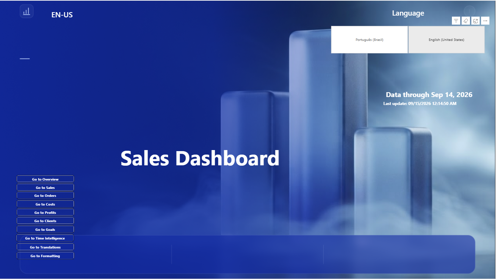
The project brings sales, orders, costs, profit, customers, and targets together in a single Power BI report, with language, currency, and formatting driven by the user's selection.
Oracle Sales BI starts from an Oracle OCI database and organizes the data into a dimensional model, with a fact table at the order-item grain, time, customer, product, channel, sales rep, and status dimensions, plus a table of monthly targets per sales rep.
The whole report exists in Portuguese (PT-BR) and English (EN-US) in the same file. Titles, labels, filters, and dynamic axes change with the language, and the currency follows the choice: Brazilian reais in PT-BR and US dollars in EN-US, converted with the Central Bank of Brazil PTAX rate of the sale date.
The report is published on the Power BI Service, with a scheduled daily refresh and the PTAX rate retrieved through a Web connection via gateway.
The main challenge was keeping a single model and a single set of pages, with text, formats, and currency suited to Brazilian and international readers.
Avoid maintaining two copies of the report: the same model has to serve Portuguese and English readers, with text, number formats, and currency suited to each.
Parameter tables, a translation catalog, and calculation groups switch labels, dimensions, metrics, currency, and formats according to the selected language.
Each page answers a specific question (sales, orders, costs, profit, customers, targets, and time), with the same layout, filters, and navigation buttons.
The analysis covers the whole path: gross sales, discounts, cancellations, returns, net sales, costs, profit, and target attainment.
The indicators cover the path from sale to result, with period comparisons and targets that make variations and points of attention easy to read.
From gross to net, with a waterfall separating discounts, cancellations, and returns.
Valid orders, items, and average order value, with variation against the previous month and year.
Total cost, cost per order and per unit, share of net sales, and lost cost.
Total profit, profit per order and per unit, margin, and profit lost to cancellations and returns.
Customers served, sales per customer, top customer, concentration (Pareto), and a map by region.
Target, actual, gap, and attainment by sales rep, team, and region, with a prorated target for the partial month.
Same period last year, year to date, daily average, and monthly seasonality.
Breakdown by 11 dimensions, such as category, product, channel, and sales rep, chosen by the user.
Each page answers a specific set of questions while keeping the visual experience consistent across the whole solution.
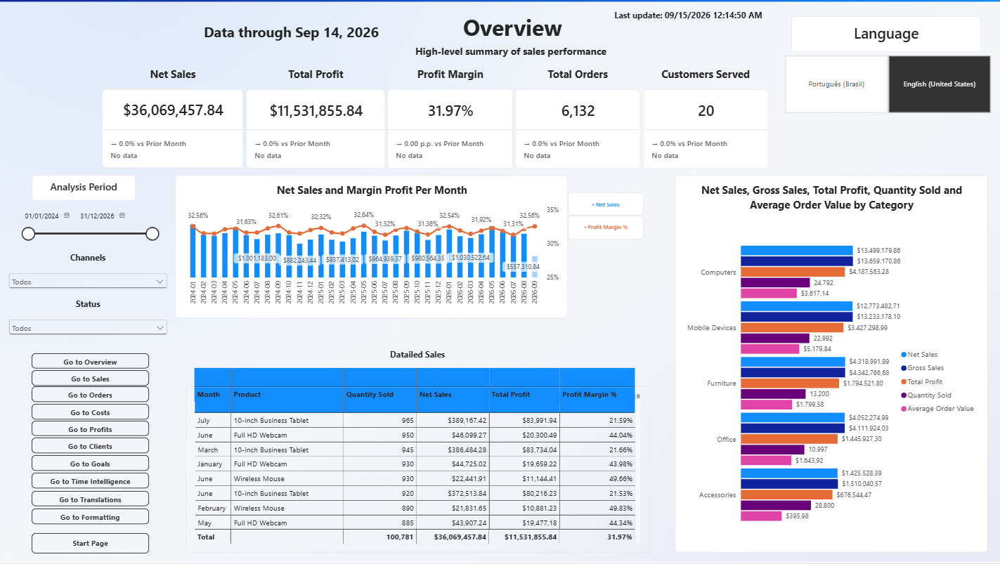
Summary of the main sales indicators, with channel, status, period, and language filters and navigation to every page.
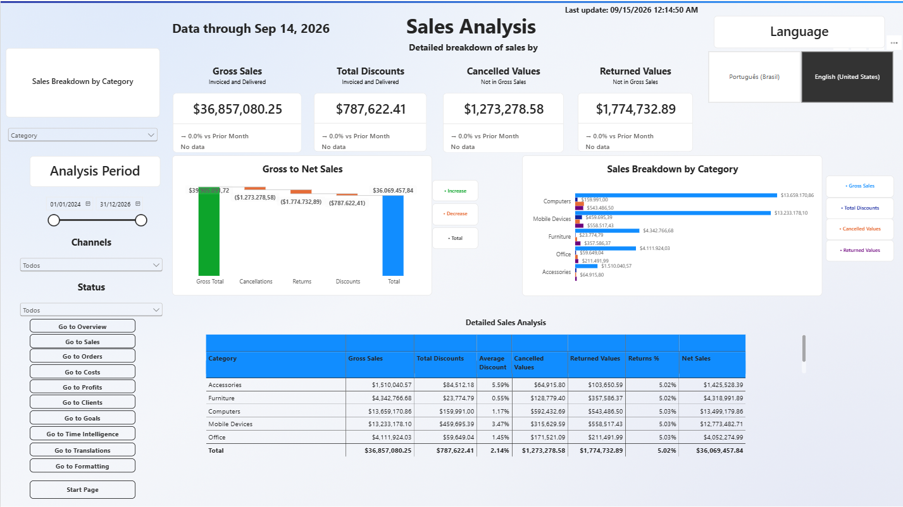
From gross to net sales in a bilingual waterfall, and a breakdown by 11 dimensions chosen by the user.
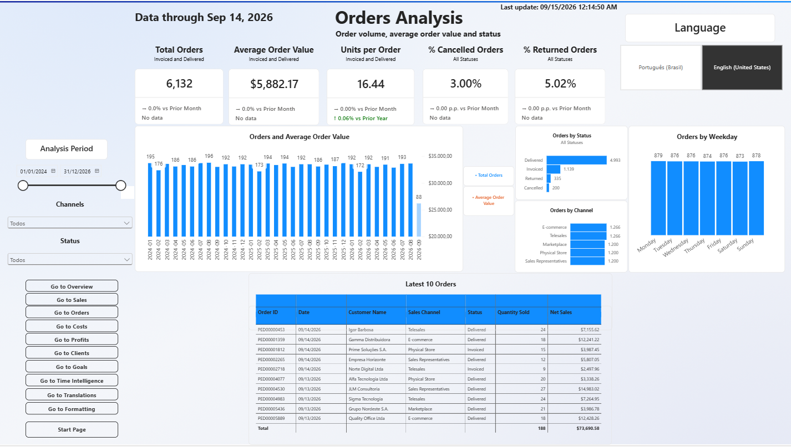
Order volume, average order value, and monthly evolution, with views by status, channel, and weekday.
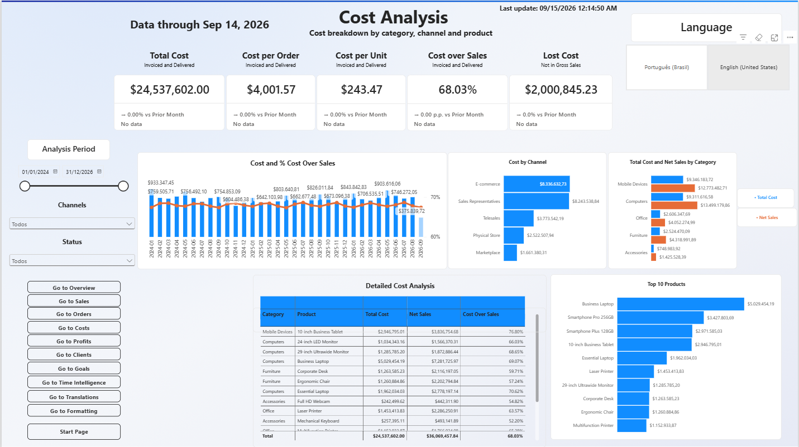
Total cost, cost per order and per unit, weight on net sales, and costs lost to cancellations and returns.
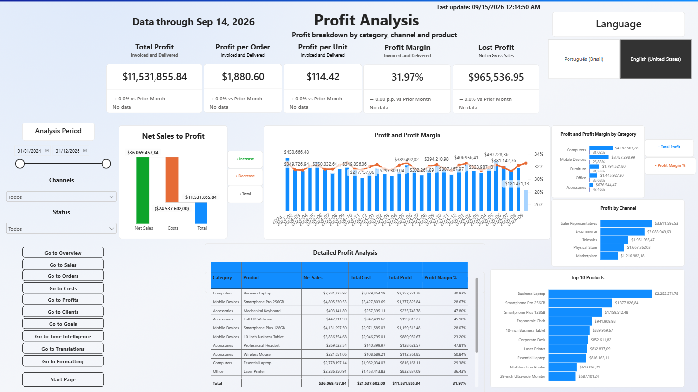
Profit, margin, and lost profit, from net sales to result, by category, channel, and product.
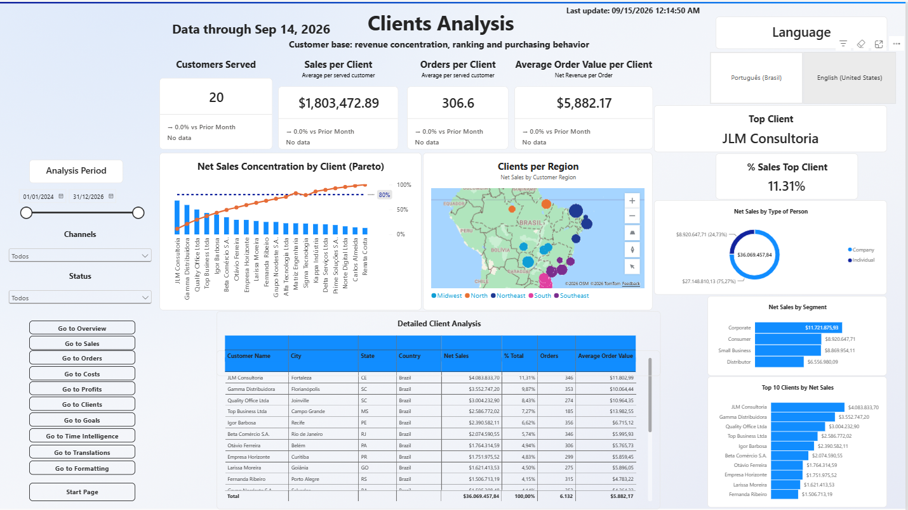
Sales concentration in a Pareto chart, ranking, segments, and a map of customers by region.
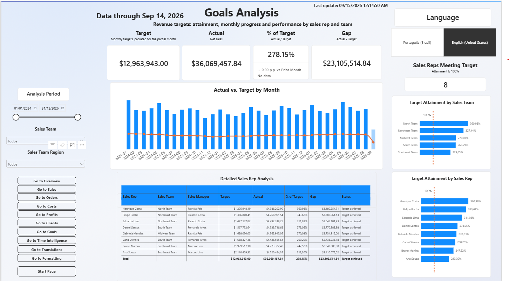
Target, actual, and attainment by sales rep, team, and region, with monthly evolution and a prorated partial-month target.
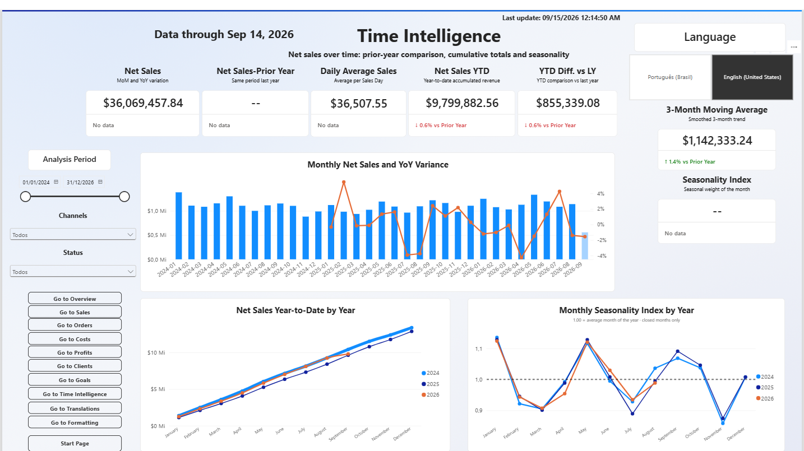
Comparison with the same period last year, year to date, daily average, and seasonality.
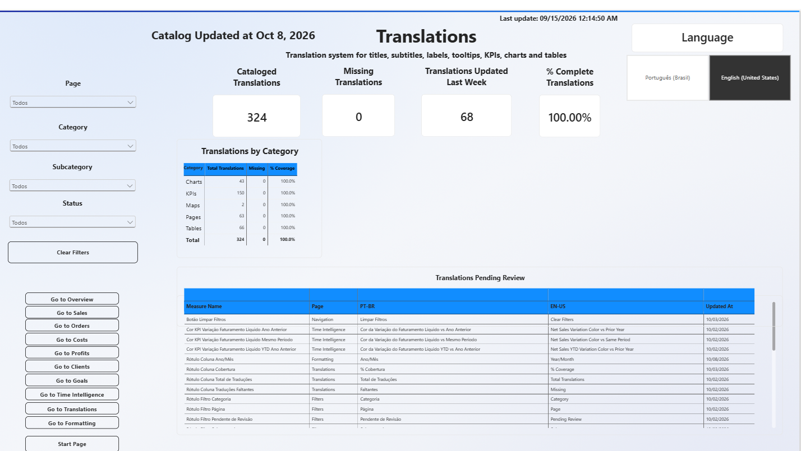
Translation catalog of the report, with bilingual filters and a list of items pending review.
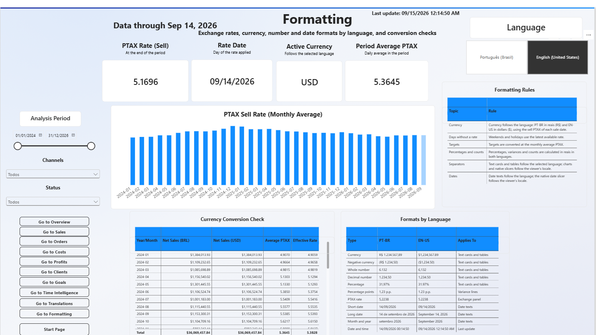
PTAX exchange rate panel, BRL/USD conversion check, and formatting rules per language.
Navigate through the pages, switch the language, apply filters, and explore the sales indicators directly from this case study.
The build followed a flow of preparation, modeling, metric creation, visualization, and publication with automatic refresh.
Sales, customers, products, channels, sales reps, and targets.
Data preparation and retrieval of the Central Bank PTAX rate.
Fact table, dimensions, field parameters, calculation groups, and measures.
Publication, gateway, and scheduled daily refresh.
The project combines data preparation, modeling, analytical calculations, visualization, localization, and publication.
10-page report with indicators, charts, maps, tooltips, navigation, and dynamic slicers.
Variations and period comparisons, prorated target, dynamic titles, and rules by sales status.
Data preparation and retrieval of the PTAX rate with the date set to Brasília time.
Source of the data and the sales rep performance views used for targets.
Dimensional model with an order-item-grain fact table, dimensions, and support tables.
Waterfall, Pareto, combined columns and lines, donut, bars, and map.
Consistent layout, Figma-style visual finish, and page-to-page navigation.
Publication, Enterprise gateway, and scheduled daily refresh.
Localization goes beyond translation: the language defines text, dimensions, currency, and formats on every page, from a single model.
The work involved technical, analytical, and visual decisions that raised the quality of the final result.
Field parameters, a translation catalog, and calculation groups avoid duplicating pages and keep the report as one.
Defining which statuses feed each measure (invoiced and delivered versus cancelled and returned) prevents different numbers for the same concept.
Partial periods and periods of different lengths need their own rules, such as the comparable period and the prorated target for the current month.
A translation catalog with items pending review and duplicate-text detection makes both languages easier to maintain.
The project is complete as a case study, but its architecture allows new analyses and features.
Oracle Sales BI brings together Oracle, SQL, Power Query, DAX, data modeling, and information design in a complete bilingual sales solution.